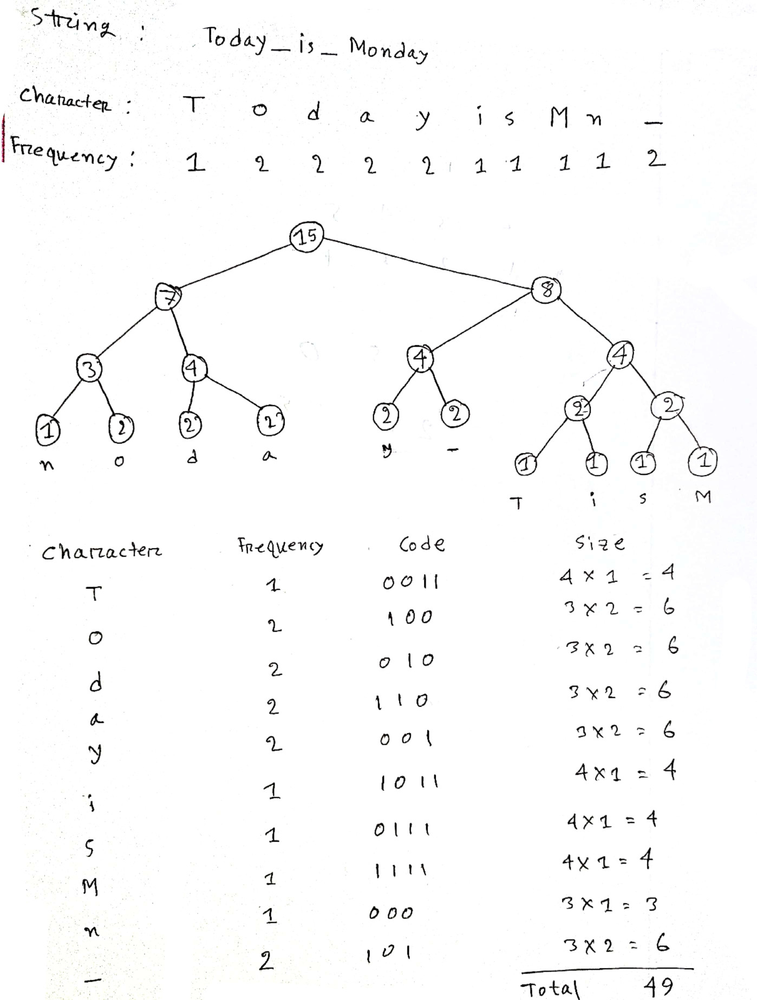

Huffman Coding
Category: Data Compression
Description: Huffman Coding is a greedy algorithm used to compress data without losing information. It assigns variable-length binary codes to input characters based on their frequencies—the more frequent a character, the shorter its code.
🎬 Business Case (Amazon Prime):
- Used in compressing movie subtitles or captions to save storage and bandwidth.
- Efficient for storing compressed metadata like actor tags, genres, or user notes.
- Helps in optimizing stream buffer storage by compressing frequently accessed UI strings or identifiers.
- Can be integrated in offline download storage mechanisms where space is limited.
🧠 How It Works?
- Count frequency of each character in the input.
- Build a priority queue (min-heap) where each node is a character and its frequency.
- Extract two nodes with lowest frequency and merge them into a new node with combined frequency.
- Repeat until one node remains — this forms the root of the Huffman Tree.
- Assign binary codes by traversing the tree: left as 0, right as 1.
📊 Visualization

👩💻 View Code
Click here for code
🧮 Complexity Analysis
- Time Complexity: O(n log n), where n is the number of characters.
- Space Complexity: O(n) for storing codes and the tree.